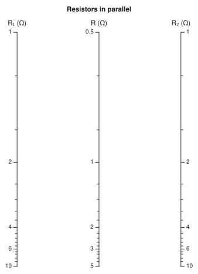
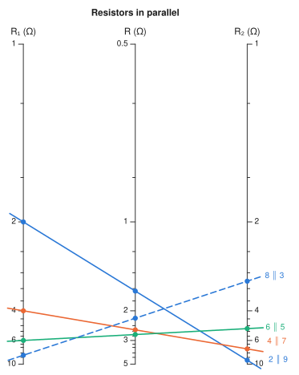

Drawing#
Rendering#
drawing turns a nomogram into a NomogramDrawing: axis polylines, tick positions, normals and labels, and isopleth segments — pure geometry, with nothing about how to draw it. Both backends are thin walks over that structure, so a NomogramStyle means the same thing in either, and tests can assert on tick positions without rendering anything.
| dependency | output | |
|---|---|---|
svg, save_svg |
none | SVG |
nomogramplot |
any Makie backend | Figure, hence PDF/SVG/PNG |

save_svg("parallel.svg", nom; isopleths = [isopleth(nom; R1 = 4, R2 = 6)])
using CairoMakie
save("parallel.pdf", nomogramplot(nom; isopleths = [isopleth(nom; R1 = 4, R2 = 6)]))Charts and drawings also display themselves as images wherever Julia can show one — a notebook, VS Code's plot pane, or a page like this one. A chart displays bare; display its drawing to include isopleths.
using Nomograms
nom = additive_nomogram(
Variable(:R1, ReciprocalScale(); domain = (1, 10), label = "R₁ (Ω)"),
Variable(:R2, ReciprocalScale(); domain = (1, 10), label = "R₂ (Ω)"),
Variable(:R, ReciprocalScale(); label = "R (Ω)");
title = "Resistors in parallel",
)
Styling#
The defaults follow the proportions of a classic d3 axis: hairline rules, short ticks and small type. Everything in NomogramStyle is measured in chart units, so at the default pxperunit = 4 they land on 1px strokes, 6px major ticks, 3px of label padding and 10px labels, and changing the output size rescales the lot together.
Isopleths get three colours — blue, orange, aqua — and that is deliberate rather than parsimonious. Every isopleth on a chart is visible at the same time, so all three pairs have to stay apart under colour-vision deficiency, and no fourth hue holds up once every pair is in play. The three were checked with a validator rather than by eye: worst pair ΔE 9.2 under deuteranopia and 24.0 in normal vision, against a ≥8 target.
d3's own category10 is not used, for a reason that is measurable rather than aesthetic: its orange and green are ΔE 0.7 apart under protanopia, which is to say indistinguishable.
Past three isopleths the dash pattern advances instead of the hue — a fourth line is a dashed blue, not a second plain blue — so identity never rests on colour alone. Override either with isoplethcolors and isoplethdashes, which both backends accept.
drawing(nom; isopleths = [
isopleth(nom; R1 = r, R2 = 11 - r, label = "$r ∥ $(11 - r)") for r in (2, 4, 6, 8)
])
Ticks#
Tick values are chosen to be round numbers in the variable, then thinned by distance on the page (thin_ticks). That split is what keeps a non-uniform axis readable: a reciprocal or logarithmic scale keeps its labels where it is stretched and drops them where it is compressed, and the numbers that survive are still round ones. Axis endpoints and decade boundaries are placed first, so a crowded axis gives up 9 before it gives up 10.
A logarithmic axis is offered every whole mantissa in every decade, in the order it should give them up — decades, then 5s, then 2s, then the rest — with no rule counting decades to decide in advance. One candidate set then serves every length of axis: eight decades settles on the classic 1-2-5 sequence, two decades labels every mantissa, and a range too narrow to hold three whole mantissas, such as 100 to 200, has its tenths promoted to labels instead of being left bare between its ends. A mantissa whose label is dropped still gets a tick mark.
Where an axis compresses so hard that automatic selection has nothing to work with, pass ticks = [...] to the Variable; anything that will not fit is still dropped.
Placing the labels#
Thinning compares a scale only against itself, which is all a parallel layout needs. Bring scales together — a diagonal, a curve, two axes close on the page — and labels from different scales start to overlap, which no amount of per-axis thinning can see.
So each label carries its anchor point, alignment and rotation, and label_box turns those into the box it actually occupies. The layout then makes one pass over the whole chart: axis titles are reserved first, then major tick labels, then minor ones, and a label that cannot fit is dropped while its tick mark stays. Isopleth labels are nudged along the perpendicular until they are clear instead, since the caller asked for those by name.
Collisions are not only label against label. An alignment line drawn straight through a number makes it just as unreadable, so segment_hits_box tests each label against the lines too and a struck label is dropped, tick mark intact. Only the span between the outermost crossings counts: the overhang past them is a flourish, and it falls exactly where the outer scales' labels sit — including the label for the value being read. Set avoid_isopleths = false to keep every label regardless.
Two related details fall out of the same geometry:
align_foruses both components of the direction a label is pushed in. While every axis was vertical only the horizontal one mattered; on a curve, a label pushed straight down from its tick has to hang from its top edge rather than sit centred on the point.An axis title is placed off the end of its scale, continuing along the tangent. For a vertical axis that is straight up from the top, exactly as before; for a diagonal or a curve it follows the scale instead of jumping to whichever point is highest.
Set ticklabelrotation = :tangent on the NomogramStyle to turn tick labels to run along their scale, which reads better on a steep or curved axis; the default leaves them upright. resolve_collisions = false turns the whole pass off.